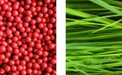
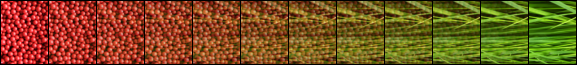
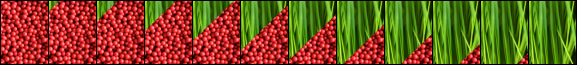
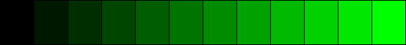
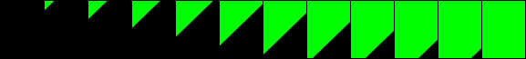

Projects > Motion Masks
Bitmap compositing driven by RLE-compressed alpha masks.
https://github.com/dpt/MotionMasks
Keywords: RLE alpha animation bitmap blend buffer clip clipping compact composite compressed framebuffer mask motion opacity stencil transition transparency wipe
The Idea
Let’s say you have two static images:

and you want to create an animated transition between them. For example, a fade:

or a wipe:

To describe each frame of the animation you could use a third image to specify at every pixel which source image to use. The “lowest” pixel value would mean select the corresponding pixel from the first image, the “highest” pixel value would mean select from the second image. Other pixel values would output a blend of the two respective input pixels.
Using green to represent “high” and black for “low”, the masks for our fade example would be:

and our wipe:

Of course, this is will be wasteful: the animation’s frames are likely to be ‘sparse’, containing long runs of identical intensity but few ‘edge’ pixels.
The sparseness of individual scanlines means that they are ideal for adaptive RLE compression. This saves space and when rendering would save waiting over and over for RAM fetches. The compression, in effect, makes use of wasted CPU cycles to provide faster RAM access.
Additionally, many entire scanlines will be identical, especially when considering all frames in the animation. We can therefore factor out identical scanlines by considering a frame to be compressed scanlines indirected through a table of offsets.
Now with our offsets and compressed scanlines we can render the animation by stepping through the offsets and plotting pixels as directed by the compressed scanline data.
Compression
The compression method used is RLE. This is simple enough to not require any heavy grunt work while plotting, but small enough to allow memory bandwidth requirements to be reduced.
Compression Method
- All of the input bitmaps are loaded.
- Each scanline is numbered and hashed then recorded in an array.
- The array is sorted into (hash, bitmap index, scanline index) order.
- Duplicates scanlines are discarded.
- Non-duplicates are encoded and packed into a data buffer, offsets retained.
Rendering
This is just like a regular bitmap plot except that each row decodes a sequence of commands. The commands specify whether to plot, or blend between the corresponding two source image pixels and plot the result.
Two source images are available concurrently. The copy command can select either, the blend commands implicitly use both.
Other commands exist, such as one which selects the respective source images for copies and blends.
Bitmaps & Screens
The Motion Mask code provides its own abstractions for bitmaps, screens and pixel formats, rather than operating on OS-specific types:
bitmap_tscreen_t
There is also a bitmap_set_t which is just like a bitmap_t but provides for multiple base pointers, allowing a series of images with identical dimensions and depth to be specified.
Pixel Formats
Pixel formats are specified with a pixelfmt_t. This enumeration has many pixels formats but only two are implemented so far: rgbx8888 and xbgr8888.
Pixel Handlers
The copying and blending of specific pixel formats are coded in a span_t.
Source Code Organisation
- Platform independent code lives in
includeandlibraries. includecontains only public headers.librariescontains private headers and source code.- Platform-specific code lives in
platform.
Building the Test App
The core is generic, but the test app only exists for OS X presently.
- Open
platform/macos/MotionMasks/MotionMasks.xcodeproj. - You’ll need to adjust the file paths at the top of
MMCommon.hto point to some 320x480 images. It’s hardcoded at the moment. Sorry about that. It’s early days. It’ll get fixed. Maybe. - Run that. It’ll open up a window which composites as you move the mouse around.
Notes
- Written in straight C (no C99-isms, I think, save for the stdint types.)
- Portable across OSes.
- Tested on 32-bit and 64-bit [Note: presently there are hacks in there for 64-bit.]
- Intended to have critical pixel-blending portions coded in assembly for speed.
- Intended for embedded use where no GPU available.
- Cocoa test app seems a painful way to get bitmaps on-screen. It’s very slow.
- Limits - two images per-pixel, sixteen source images which can be selected mid-stream.
- Streams - abstracted loading mechanism.
- It’s easy to make upside-down bitmaps (just flip rowbytes and set the base pointer to the start of the last scanline.)
- 64K limit on data.
Current Status
- Compression works.
- Rendering works.
There is an OS X Cocoa test app (“MotionMaskTest”) in platform/macos which loads a PNG from a (presently hard coded) location. This is packed into a Motion Mask and written out to disc. It’s then loaded back in and some JPEGs are loaded and displayed through the Motion Mask. The mouse can be moved around the window to draw at different offsets.
File Format
Header
…
Frames
…
Offsets
…
Data
…
Binary Encoding
The count of leading zeros of the initial byte is the unique identifier of the operation.
Syntax:
Lis a length bit,Ais an alpha bit,TandSare source index bits,xis undefined.
| Command | Binary format | Description |
|---|---|---|
| Copy | 1SLLLLLL |
Copy from source S 1..64 pixels. |
| Blend const | 01LLLLLL AAAAAAAA |
Alpha blend 1..64 pixels with constant alpha. |
| Blend array | 001LLLLL AAAAAAAA[len] |
Alpha blend 1..32 pixels with variable alpha. |
| Long copy | 0001SLLL LLLLLLLL |
Copy from source S 65..2112 pixels. |
| Long blend const | 00001LLL LLLLLLLL AAAAAAAA |
Alpha blend 65..2112 pixels with constant alpha. |
| Long blend array | 000001LL LLLLLLLL AAAAAAAA[len] |
Alpha blend 33..1056 pixels with variable alpha. |
| Set source | 0000001x TTTTSSSS |
Set source images 0 and 1 to S and T. (Source zero is the screen, source N is input image N-1). |
| EOL | 00000001 |
End of line. |
To Do
- Lots and lots!
- Build environments for non-OS X platforms!
- Regression tests!
- Offsets ought to be RLE’d! (They make up the bulk of the size of the Motion Mask).
- Improve this documentation!
- Doxygenate the codebase!
- SetXY command! (To allow source image positions to be set).
- Porter-Duff!
- A library to support building custom Motion Masks from code!
- Ragged right hand edges! (Motion Masks don’t need to be square)
History
- Get some animated stuff going! [done]
Other Projects with Similar Features
Author
David Thomas dave@davespace.co.uk
Copyright
Copyright © David Thomas, 2012. All Rights Reserved.
[Licensing will be sorted out once the damn thing works].